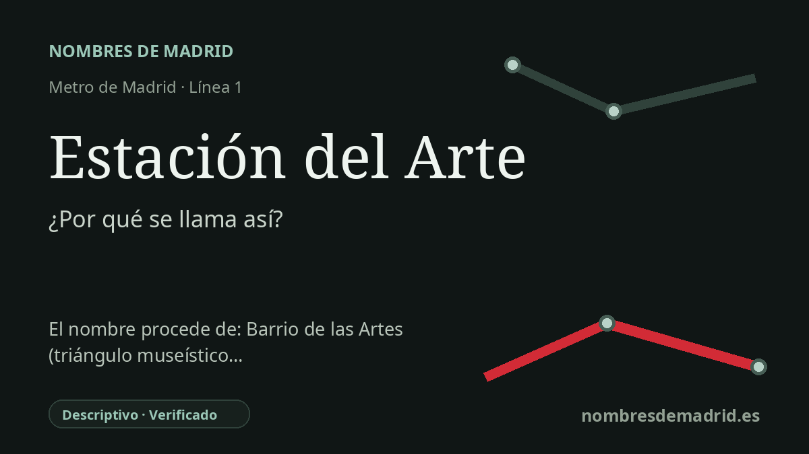

Publicado el · Investigación de Nombres de Madrid · Cómo verificamos cada origen · 7 fuentes consultadas
Respuesta rápida
Estación del Arte es un nombre descriptivo moderno adoptado el 1 de diciembre de 2018 para la antigua estación de Metro de Atocha. Orienta a los viajeros hacia el gran eje museístico madrileño del Prado, Reina Sofía y Thyssen-Bornemisza, y distingue esta parada de la estación de Atocha vinculada al ferrocarril.
La historia del nombre
El nombre **Estación del Arte** no es un topónimo antiguo, sino una denominación moderna y deliberada. La antigua estación de **Atocha** de la línea 1 pasó a llamarse así con efectos de **1 de diciembre de 2018** para presentarse como puerta de entrada a los museos cercanos: el Museo del Prado, el Museo Reina Sofía y el Museo Nacional Thyssen-Bornemisza.
El nombre anterior, **Atocha**, procedía del histórico entorno ferroviario y urbano de la glorieta del Emperador Carlos V. Cuando esta estación de Metro se inauguró en 1921, conectaba la joven red subterránea con la estación de ferrocarril conocida entonces como Estación del Mediodía, la gran terminal meridional de Madrid. Durante décadas, la identidad de la parada estuvo ligada a esa puerta ferroviaria.
Esa relación cambió con la evolución del intercambiador. La documentación histórica de Metro señala que la antigua estación de Atocha llegó a contar con un pasillo hacia la estación ferroviaria, pero el acceso directo al tren pasó a recaer desde 1988 en la estación intermedia llamada entonces Atocha-Renfe, hoy simplemente Atocha. En 2018, la existencia de dos nombres de Metro próximos basados en Atocha se consideraba confusa para usuarios y visitantes.
El nuevo nombre también describe la ciudad de la superficie. La estación se sitúa cerca del extremo sur del área del Paseo del Prado o Paseo del Arte, donde Madrid promociona una ruta cultural densa que incluye el Prado, el Reina Sofía, el Thyssen-Bornemisza, CaixaForum y otras instituciones. Desde 2021, el paisaje cultural del Paseo del Prado y el Buen Retiro forma además parte de la Lista del Patrimonio Mundial de la UNESCO con el nombre de Paisaje de la Luz.
El cambio no fue solo cartográfico. Un acuerdo de 2018 convirtió la estación en un espacio de temática artística con reproducciones de gran formato procedentes de los tres grandes museos, inicialmente 36 obras, 12 de cada museo, instaladas en pasillos, andenes y vestíbulos. Por tanto, la etimología es segura: **Estación del Arte** es un nombre descriptivo de transporte creado para aclarar la orientación y presentar la parada como entrada subterránea al eje museístico madrileño.